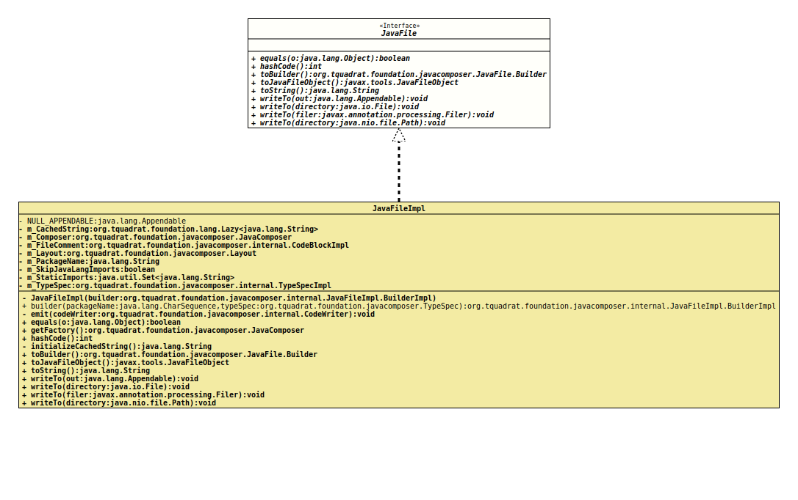

Interface JavaFile
- All Known Implementing Classes:
JavaFileImpl
@ClassVersion(sourceVersion="$Id: JavaFile.java 854 2021-01-20 22:44:45Z tquadrat $")
@API(status=STABLE,
since="0.0.5")
public sealed interface JavaFile
permits JavaFileImpl
The definition for a Java file containing a single top level class.
- Author:
- Square,Inc.
- Modified by:
- Thomas Thrien (thomas.thrien@tquadrat.org)
- Version:
- $Id: JavaFile.java 854 2021-01-20 22:44:45Z tquadrat $
- Since:
- 0.0.5
- UML Diagram
-

UML Diagram for "org.tquadrat.foundation.javacomposer.JavaFile"
{kind=link}
-
Nested Class Summary
Nested ClassesModifier and TypeInterfaceDescriptionstatic interfaceThe definition for a builder for an instance of an implementation ofJavaFile. -
Method Summary
Modifier and TypeMethodDescriptionstatic JavaFile.Builderbuilder(CharSequence packageName, TypeSpec typeSpec) Deprecated, for removal: This API element is subject to removal in a future version.booleaninthashCode()Returns a new builder that is initialised with thisJavaFileinstance.Creates aJavaFileObjectfrom this instance ofJavaFile.toString()voidWrites thisJavaFileinstance to the given target folder as a UTF-8 file, using the standard directory structure for the packages.voidwriteTo(Appendable out) Writes thisJavaFileinstance to the givenAppendable.voidWrites thisJavaFileinstance to the given target folder as a UTF-8 file, using the standard directory structure for the packages.voidWritesJavaFileinstance to the givenFilerinstance.
-
Method Details
-
builder
@Deprecated(since="0.2.0", forRemoval=true) @API(status=DEPRECATED, since="0.0.5") static JavaFile.Builder builder(CharSequence packageName, TypeSpec typeSpec) Deprecated, for removal: This API element is subject to removal in a future version.Replaced byJavaComposer.javaFileBuilder(CharSequence, TypeSpec).Creates a builder for a new instance ofJavaFilefrom the given package name and class definition.- Parameters:
packageName- The package name.typeSpec- The class definition.- Returns:
- The builder.
-
equals
-
hashCode
int hashCode() -
toBuilder
Returns a new builder that is initialised with thisJavaFileinstance.- Returns:
- The new builder.
-
toJavaFileObject
Creates aJavaFileObjectfrom this instance ofJavaFile.- Returns:
- The
JavaFileObject.
-
toString
-
writeTo
Writes thisJavaFileinstance to the givenAppendable.- Parameters:
out- The output target.- Throws:
IOException- A problem occurred when writing to the output target.
-
writeTo
Writes thisJavaFileinstance to the given target folder as a UTF-8 file, using the standard directory structure for the packages.- Parameters:
directory- The target folder.- Throws:
IOException- A problem occurred when writing to the output target.
-
writeTo
WritesJavaFileinstance to the givenFilerinstance.- Parameters:
filer- The target.- Throws:
IOException- A problem occurred when writing to the output target.
-
writeTo
Writes thisJavaFileinstance to the given target folder as a UTF-8 file, using the standard directory structure for the packages.- Parameters:
directory- The target folder.- Throws:
IOException- A problem occurred when writing to the output target.
-
JavaComposer.javaFileBuilder(CharSequence, TypeSpec).